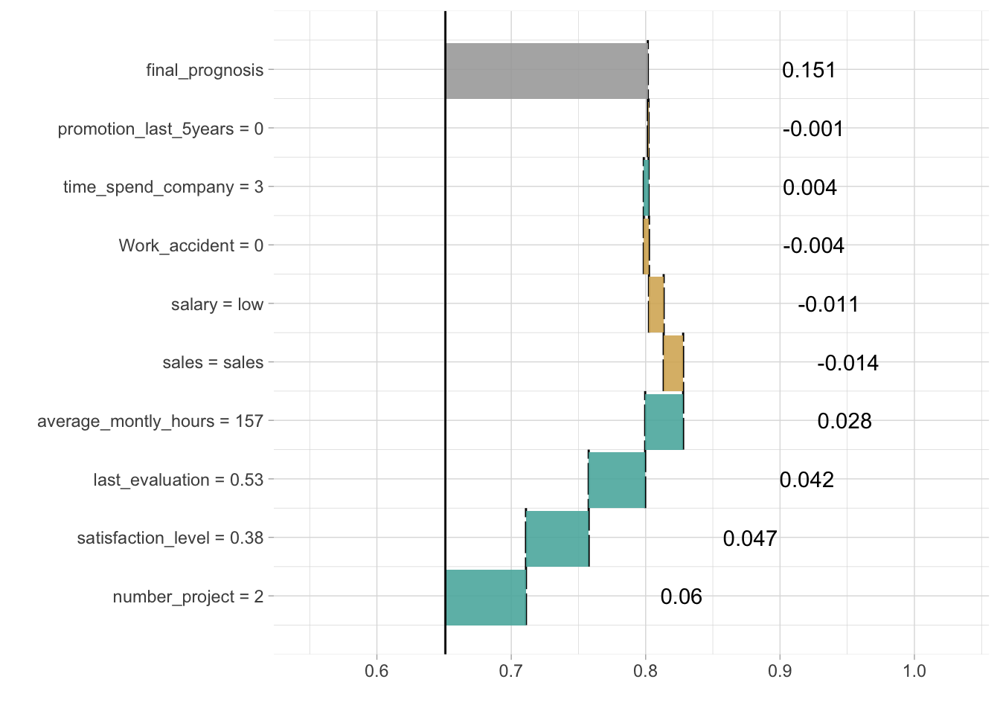
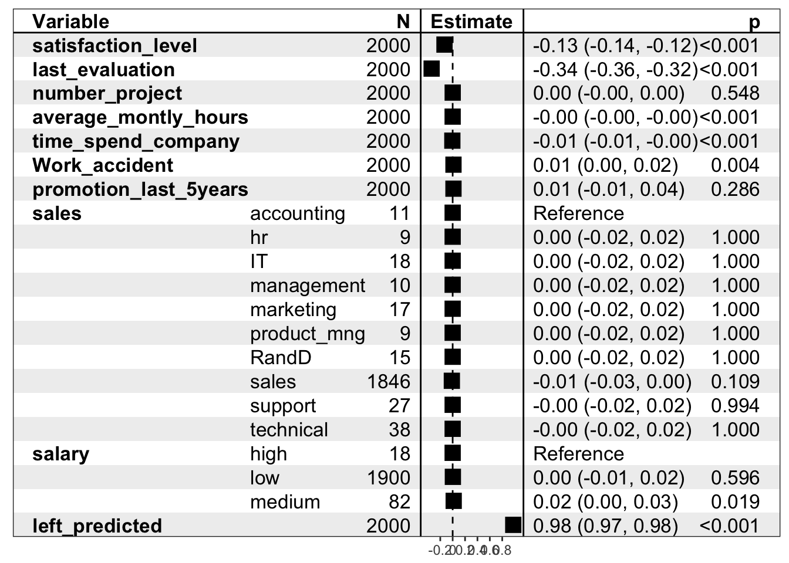

4.3 Local Interpretable (Model-agnostic) Visual Explanations

Cheatsheet
The live package (see (Staniak and Biecek 2017Staniak, Mateusz, and Przemyslaw Biecek. 2017. Live: Local Interpretable (Model-Agnostic) Visual Explanations. https://github.com/MI2DataLab/live.)) may be seen as an extension of the lime method (see (Ribeiro, Singh, and Guestrin 2016Ribeiro, Marco Tulio, Sameer Singh, and Carlos Guestrin. 2016. “‘Why Should I Trust You?’: Explaining the Predictions of Any Classifier.” In, 1135–44. ACM Press. https://doi.org/10.1145/2939672.2939778.)). It is based on mlr general framework for training of machine learning models (see more (Bischl et al. 2016Bischl, Bernd, Michel Lang, Lars Kotthoff, Julia Schiffner, Jakob Richter, Erich Studerus, Giuseppe Casalicchio, and Zachary M. Jones. 2016. “mlr: Machine Learning in R.” Journal of Machine Learning Research 17 (170):1–5. http://jmlr.org/papers/v17/15-066.html.)).
Let’s see an example. We will use the HR_rf_model trained with the randomForest package on Human Resources Analytics data.
Around a selected point we will fit a linear model.
library("live")
library("randomForest")
library("breakDown")
HR_data$left <- as.numeric(as.character(HR_data$left))
HR_rf_model <- randomForest(left~., data = HR_data,
ntree=100)
similar <- sample_locally(data = HR_data, explained_instance = HR_data[1,], explained_var = "left", size = 2000)
similar <- add_predictions(HR_data, similar, HR_rf_model)
trained <- fit_explanation( live_object = similar, white_box = "regr.lm", selection = FALSE)Fitted model may be plotted with waterfall plot …

… or forest plot …

For more details consult the following vignette.